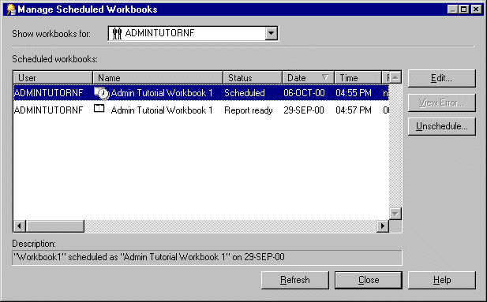

10g (9.0.4)
Part Number B10270-01
Library |
Contents |
Index |
| Oracle Discoverer Administrator Administration Guide (Online Help) 10g (9.0.4) Part Number B10270-01 |
|
This chapter explains how to enable users to schedule workbooks and contains the following topics:
A workbook is a collection of Discoverer worksheets. Workbooks are essentially documents containing query definitions. Discoverer end users can store their workbooks centrally in the database. In Discoverer Desktop, users can also store workbooks on their own PC or on a network file server.
A scheduled workbook is a workbook that has been set by the user to run automatically at a particular date, time, and frequency. Scheduled workbooks are placed on a process queue on the database server. End users can schedule workbooks using Discoverer Plus and Desktop. As the Discoverer manager, you can use Discoverer Administrator to monitor and maintain scheduled workbooks.
Note the following:
From a Discoverer end user's point of view, the ability to schedule workbooks is useful for:
For example, a Discoverer end user might want to run a report that they know will take a long time to complete. The user can schedule the report to run overnight and have the results ready to view the next morning.
From a Discoverer manager's point of view, workbook scheduling is useful to prevent long-running queries from adversely affecting system performance. You can force users to schedule workbooks (either all workbooks, or only those workbooks that will exceed a predicted time that you specify), and you can further specify the time periods that scheduled workbooks are permitted to run.
The table below shows what happens when an end user schedules a workbook in Discoverer Plus.
| Sequence | Action | Notes |
|---|---|---|
|
1. |
User selects worksheet (or worksheets) to include in scheduled workbook |
N/A |
|
2. |
User specifies date, time, and frequency at which scheduled workbook is to run |
N/A |
|
3. |
Discoverer Plus confirms that scheduling the workbook does not exceed user's limit on number of scheduled workbooks |
The limit on the number of scheduled workbooks restricts the number of scheduled workbooks that can be maintained at any one time. As the Discoverer manager, you specify this limit on the "Privileges dialog: Scheduled Workbooks tab". If the user exceeds their limit, Discoverer Plus displays a message and the workbook is not scheduled. The job_queue_processes value controls the maximum number of jobs that can be run at any one time on the server. For more information, see "What Oracle database features support workbook scheduling?". Setting a limit on the number of scheduled workbooks is not the same as the job_queue_processes value in the Oracle initialization file. |
|
4. |
Discoverer adds scheduled workbook to DBMS_JOB within Oracle database kernel |
N/A |
|
5. |
Periodically, the job queue process is activated and the next job in the queue is run |
The scheduled workbook is processed entirely on the server. You use the job_queue_interval value (desupported in Oracle9i (and later) Enterprise Edition databases) in the Oracle database initialization file to specify the length of time that the job queue process is inactive. For more information, see "How to control the frequency that the server checks for new scheduled jobs". |
|
6. |
A database table is created and populated with the output or result set of the scheduled workbook |
The result set is stored under the schema specified by the Discoverer manager. For more information, see "Where to store the results of scheduled workbooks?". |
|
7. |
User can view scheduled workbook |
N/A |
|
8. |
User can delete result set when no longer required - at which point the table is dropped |
As the Discoverer manager, you can specify how long the results of a user's scheduled workbook can remain in the database before being automatically deleted (see "Privileges dialog: Scheduled Workbooks tab"). |
Discoverer takes advantage of native scheduling functionality in the Oracle database to schedule workbooks. Specifically, Discoverer makes use of the DBMS_JOB package.
You control the processing of the DBMS_JOB package using the following parameters in the Oracle database initialization file (the INIT<SID>.ORA file).
| Parameter in INIT<SID>.ORA | Use to: |
|---|---|
|
job_queue_processes |
Use this parameter to specify the maximum number of concurrent processing requests that can be used to process DBMS_JOB. The default value is zero, which means processing requests will not be created. If you want to have ten processing requests to be handled simultaneously, set this parameter to 10. If any other applications use DBMS_JOB, set this parameter to at least 2. Hint: You need more than one job queue process because a job that fails (for any reason) might continue to be re-submitted and prevent any other jobs in the queue from being submitted. |
|
job_queue_interval |
Use this parameter to specify the time frequency (in seconds) after which job processes are started to process pending jobs. The default is 60 seconds, which means that every 60 seconds the job processes start to serve processing requests. What you set this parameter to depends on how frequently you want the process to start up and serve the requests that have been made. Oracle recommends that you set this parameter to at least 600 seconds (i.e. 10 minutes). Note that this parameter also affects the Discoverer summary management feature (for more information about summary folders, see Chapter 13, "Managing summary folders"). Note: The job_queue_interval parameter is desupported in Oracle9i (and later) Enterprise Edition databases. In Oracle9i Enterprise Edition databases, job queue processes are dynamically spawned by a coordinator job queue (CJQ0) background process. The coordinator periodically selects jobs that are ready to run from the jobs shown in the dba_jobs view. |
For more information about setting the parameters in the INIT<SID>.ORA file, see "How to control the frequency that the server checks for new scheduled jobs".
Note that workbook scheduling is only available when running against an Oracle database because both DBMS_JOB and the INIT<SID>.ORA file are only available with Oracle databases.
Discoverer stores the results of scheduled workbooks in database tables. Before an end user can schedule a workbook, you must decide which database user (schema) is to own those tables. You have two choices as described in the table below:
| Owner | Notes |
|---|---|
|
the schema running the scheduled workbook |
The advantage of specifying the result set storage in the end user's schema is that a database limit can be specified on the maximum amount of data an end user can store in the database. If the result set is stored under the end user's schema, you keep control over the maximum amount of space one individual end user can fill with result sets. If the end user creates a scheduled workbook that fills the space, only that end user's schema is affected. A disadvantage is that it increases the maintenance overhead. Note: Since Oracle Applications users often share the same secure database account, they are advised to create a scheduled workbook results schema to store the results of scheduled workbooks. |
|
scheduled workbook results schema |
The advantage of specifying the result set storage in a scheduled workbook results schema is that it is generally easier to manage than using multiple database user schemas. Also each end user does not need to set up additional database privileges to run scheduled workbooks. The disadvantage is that space quota is shared and so could be exhausted by a single end user. Note: Oracle Applications users must use the Oracle Applications APPS database user as the scheduled workbook results schema (for more information, see "How to set scheduled workbook limits"). Since the APPS database user is already the default schema for Oracle Applications users, there is no need to run the SQL script (i.e. batchusr.sql) to create a scheduled workbook results schema. |
For more information about how to specify where the results of scheduled workbooks are stored, see "How to specify the owner of the tables containing scheduled workbooks results".
Before an end user can schedule a workbook, you must:
Before an end user can schedule a workbook, the DBMS_JOB package must have already been installed on the database. If the DBMS_JOB package has not yet been installed, you must install it.
To confirm that the DBMS_JOB package is installed:
For example, if SQL*Plus is already running, you might type the following at the command prompt:
SQL> CONNECT dba_user/dba_pw@database;
Where dba_user is the database administrator and dba_pw is the database administrator password.
SQL> select * from all_objects where object_name='DBMS_JOB' and object_type = 'PACKAGE';
If the above statement returns one or more rows, the DBMS_JOB package is already installed on the database.
If the above statement returns no rows, the DBMS_JOB package has not yet been installed. You must install the DBMS_JOB package before users can schedule workbooks.
To install the DBMS_JOB package if it is not yet installed, for Oracle9i databases:
For example, if SQL*Plus is already running, you might type the following at the command prompt:
SQL> CONNECT sys/sys_pw@database AS SYSDBA;
Where sys is the SYS user and sys_pw is the SYS user password.
SQL> start <ORACLE_HOME>/rdbms/admin/dbmsjob.sql;
SQL> start <ORACLE_HOME>/rdbms/admin/prvtjob.plb;
To install the DBMS_JOB package if it is not yet installed, for Oracle databases earlier than Oracle9i:
| Version of Oracle: | Type the following: |
|---|---|
|
Oracle 8.0 and above |
|
|
Oracle8i Personal Edition |
|
SVRMGRL> connect internal
SVRMGRL> start <ORACLE_HOME>/rdbms/admin/dbmsjob.sql;
SVRMGRL> start <ORACLE_HOME>/rdbms/admin/prvtjob.plb;
The results of scheduled workbooks are stored in database tables. Discoverer's default behavior is to store scheduled workbooks in the EUL owners schema. Before an end user schedules a workbook, you must decide which database user is to own those tables. You have two choices:
For more information about these two choices, see "Where to store the results of scheduled workbooks?"
Regardless of the choice you make, the database user that will own the tables containing scheduled workbook results must have certain database privileges.
To specify a database user to own the database tables containing the results of that workbook:
For example, if SQL*Plus is already running, you might type the following at the command prompt:
SQL> CONNECT dba_user/dba_pw@database;
Where dba_user is the database administrator and dba_pw is the database administrator password.
SQL> grant CREATE PROCEDURE to <user name>; SQL> grant CREATE TABLE to <user name>; SQL> grant CREATE VIEW to <user name>;
where <user name> is the name of the database user that is to schedule workbooks.
Note that you must grant these privileges directly to the database user and not to a database role.
To specify a scheduled workbook results schema to own the results tables of scheduled workbooks:
Note: Oracle Applications users should not use this script, but instead use the existing Oracle Applications APPS user (for more information, see "How to set scheduled workbook limits").
Note: You must know the user name and password of the EUL owner in order to run the script batchusr.sql.
For example, if SQL*Plus is already running, you might type the following at the command prompt:
SQL> CONNECT dba_user/dba_pw@database;
Where dba_user is the database administrator and dba_pw is the database administrator password.
SQL> start<ORACLE_HOME>\discoverer\util\batchusr.sql;
Note: Ask your database administrator if you are unsure about these settings.
Note: The script creates a scheduled workbook results schema and grants the following database privileges:
The scheduled workbook results schema created by the batchusr.sql script is granted the SELECT ANY TABLE database privilege to enable access to the underlying data needed for workbook scheduling. Without this grant, this database user's access to the underlying data might be limited.
If you do not want the scheduled workbook results schema to have the SELECT ANY TABLE database privilege on the underlying data, you must revoke the privilege manually.
You must use Discoverer Administrator to choose the database user that will own the scheduled workbook result tables created in the database.
You have used the script batchusr.sql to create a scheduled workbook results schema and then used the Privileges dialog to select the scheduled workbook results schema to be used for the EUL owner.
For more information about scheduled workbook privileges, see Chapter 6, "How to set scheduled workbook limits".
You use the following two parameters in the INIT<SID>.ORA file to control scheduled workbook processing:
For more information about these parameters, see "What Oracle database features support workbook scheduling?".
To control the frequency of scheduled workbook processing:
The INIT<SID>.ORA file is held in <ORACLE_HOME>\database. The default name of the file is INITORCL.ORA, where ORCL is the <SID> name.
job_queue_processes = <a_value> job_queue_interval = <a_value_in_seconds>
where:
For example, you might add the following two lines to the INIT<SID>.ORA file:
job_queue_processes = 2 job_queue_interval = 600
As the Discoverer manager, you will want to monitor the status of currently scheduled workbooks, as well as:
Note: If you have an Oracle Applications mode EUL you must login as the EUL owner to view and manage scheduled workbooks.
To view and manage a scheduled workbook:

Hints: You can:
The View Error button is only enabled for scheduled workbooks when the status is set to indicate that an error occurred while running the query.
When you carry out an EUL upgrade to this version of Discoverer, a new version of the batch PL/SQL package is installed into the user's schema alongside the existing package. Preserving the existing PL/SQL package prevents any existing scheduled workbook batch jobs from being destroyed. Function names in the new batch PL/SQL package however, remain the same as the existing batch PL/SQL package.
When you upgrade the EUL to this version of Discoverer and the following conditions are true:
In this case you must install the new version of the batch PL/SQL package (EUL5_BATCH_USER) using the SQL script batchusr.sql. The script is located in the <ORACLE_HOME>\discoverer\util directory. The new version of the batch PL/SQL package can be installed into the scheduled workbook results schema (i.e. the user's schema that owns the tables containing the workbook results). For more information, see "Use a script to specify a scheduled workbook results schema to own the scheduled workbook results tables (i.e. not the database user scheduling the workbook)".
|
|
 Copyright © 2003 Oracle Corporation. All Rights Reserved. |
|